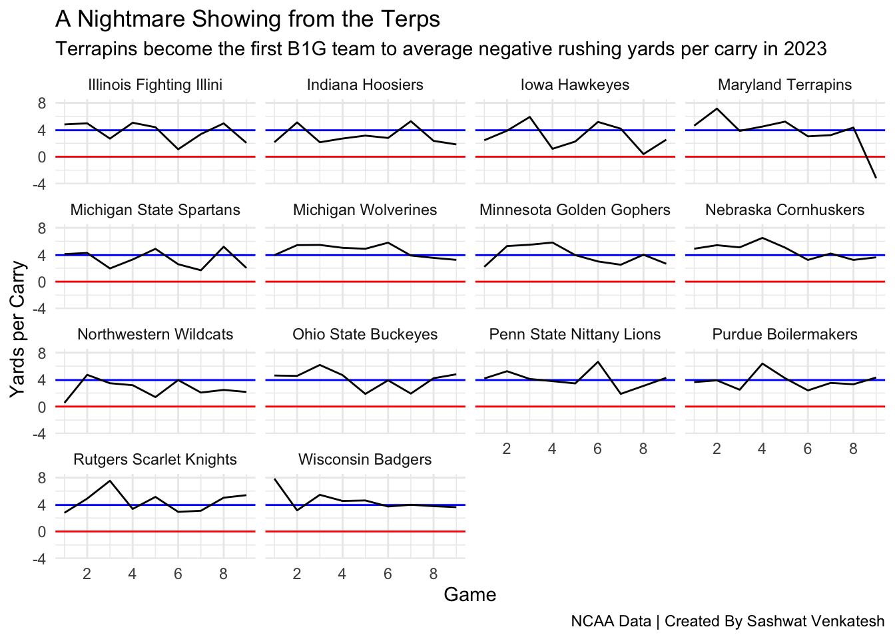

Code
suppressMessages(library(tidyverse))
suppressMessages(library(ggplot2))
suppressMessages(library(scales))
suppressMessages(library(formattable))
suppressMessages(logs <- read_csv("https://www.thescoop.org/sports-data-files/footballlogs23.csv"))Sashwat Venkatesh
November 7, 2023
b1g <- c("Maryland Terrapins", "Michigan Wolverines", "Michigan State Spartans", "Nebraska Cornhuskers",
"Indiana Hoosiers", "Ohio State Buckeyes", "Penn State Nittany Lions", "Rutgers Scarlet Knights",
"Illinois Fighting Illini", "Iowa Hawkeyes", "Minnesota Golden Gophers", "Northwestern Wildcats",
"Purdue Boilermakers", "Wisconsin Badgers")
runningLogs <- logs |> select(TeamFull, Opponent, Date, Game, RushingYds, RushingAtt, Result)
runningLogs <- runningLogs |> mutate(YPC = RushingYds/RushingAtt)
b1gRunning <- runningLogs |> filter(TeamFull %in% b1g)
temp <- b1gRunning |> summarise(sum(RushingYds)/sum(RushingAtt))
#b1gRunningAveragers <- b1gRunning |>
# group_by(TeamFull) |>
# summarise(games = n(), totalRushYds = sum(RushingYds), totalRush = sum(RushingAtt),
# YPC = sum(RushingYds)/sum(RushingAtt))Before Maryland’s Saturday showdown against Penn State, many Terrapin fans already had the outcome in their minds: an impending domination by the Nittany Lions in College Park. What followed, by most accounts, was somehow worse than the worst case scenario. Despite the 43W-2L-1T record Penn State holds against the Terrapins, the 15-51 loss the Terrapins suffered was plagued by stagnant offense, and a game from the defense that looked like a group of spectators had been picked from the stands to play against Penn State.
ggplot() +
geom_hline(yintercept=3.934071, color="blue") +
geom_hline(yintercept=0.000000, color="red") +
geom_line(data=b1gRunning, aes(x=Game, y=YPC, group=TeamFull)) +
scale_y_continuous(limits = c(-3.5, 8)) +
scale_x_continuous(limits = c(1, 9), breaks = pretty_breaks()) +
facet_wrap(~TeamFull) +
ylab("Yards per Carry") +
labs(title="A Nightmare Showing from the Terps", subtitle = "Terrapins become the first B1G team to average negative rushing yards per carry in 2023", caption = "NCAA Data | Created By Sashwat Venkatesh") +
theme_minimal()
On Saturday night, as fans slowly filtered out of SECU Stadium, the Terrapins became the first Big Ten team to achieve a rather dubious statline: They averaged -3.2 yards per rushing attempt, the first game this season where a Big Ten team averaged less than ZERO yards per attempt. This is by and far the worst running game performance from a squad this season, with the next worst performance coming from Iowa’s October 21st matchup against Minnesota, where the Hawkeyes averaged 0.4 yards per attempt.
Across the ~600 Division 1 college football games played this season, just SIX have ended with a team in negative rushing yards. Unfortunately, not being the only team in the nation doesn’t save Maryland here:
| TeamFull | Opponent | RushingYds | YPC | Result |
|---|---|---|---|---|
| Maryland Terrapins | Penn State | -51 | -3.18750000 | L (15-51) |
| Troy Trojans | James Madison | -12 | -0.63157895 | L (14-16) |
| Colorado Buffaloes | Oregon State | -7 | -0.36842105 | L (19-26) |
| Hawaii Rainbow Warriors | Stanford | -5 | -0.31250000 | L (24-37) |
| Marshall Thundering Herd | James Madison | -4 | -0.12500000 | L (9-20) |
| South Carolina Gamecocks | North Carolina | -2 | -0.06451613 | L (17-31) |
Of the 6 teams that have suffered a similar fate, the Terrapins, in their game, had the most lost rushing yards (-51), the worst margin of loss (-36), as well as the lowest yards per carry.
It’s safe to say that for a team that’s been sitting at 5 wins since September 30 and has now lost 4 straight, getting that elusive 6th and bowl eligibility earning win will be no easy feat. The Terrapins remaining schedule sees them playing @Nebraska, another 5-4 team looking to find their footing and 6th win, followed by a now 9-0 Michigan Wolverines team who will surely be in the discussions for the College Football Playoff, before ending the the season in Piscataway playing at Rutgers, who have already clinched their 6th win.
To the powers that be at Maryland Football’s coaching and playcalling staff, I humbly submit the following:
Dominating the run game isn’t always sure shot to winning football games, but averaging more than 0 yards per rushing attempt might just be a good first step in getting there.